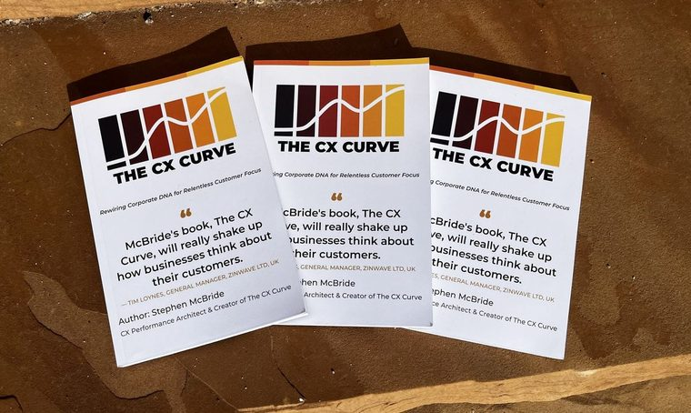
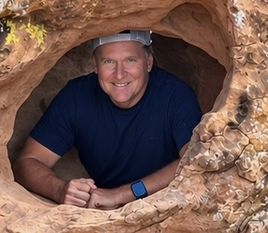
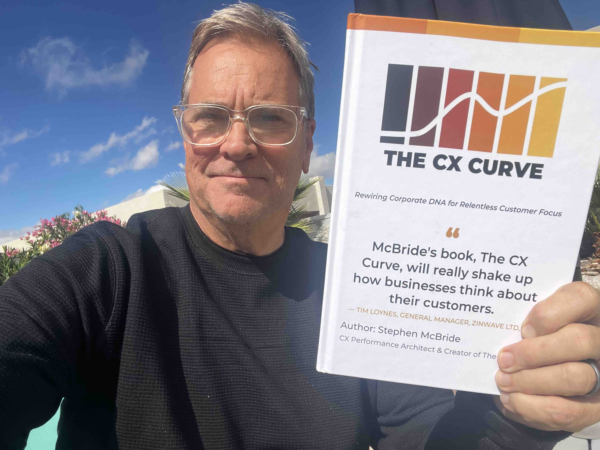

The CX Curve fundamentally shifts how businesses approach customer experience. A holistic, psychologically informed approach that drives deeper loyalty, more referrals, and sustainable growth.Danielle Bass
Attorney/Partner, Honigman LLP
CX drives the velocity of your business. When customers glide, momentum builds. We work alongside your leadership team to rally the entire organization around the customer.

Rewiring Corporate DNA for Relentless Customer Focus
“McBride’s book, The CX Curve, will really shake up how businesses think about their customers.” — Tim Loynes, General Manager, Zinwave Ltd, UK
A practical operational playbook for leaders who want CX to be a strategic priority rather than an overlooked cost center, turning loyalty and retention into predictable growth engines through the Orbits CX OS.
Start executing. Chapter 9 is a practical operational field guide loaded with ORBITS diagnostic maps, momentum stress-tests, and playbooks your team can deploy the same day.
The CX Curve fundamentally shifts how businesses approach customer experience. A holistic, psychologically informed approach that drives deeper loyalty, more referrals, and sustainable growth.Danielle Bass
Too many companies chase numbers and forget that real growth happens when customers actually trust you. A practical, smart way to focus on what really matters.Cory Maloy
Forget the buzzwords. Dead-simple, high-impact playbook for building loyalty that lasts.James Wright
For any CXO looking to move beyond transactional metrics, this book is a must-read.Bill Tolson
The CX Curve will really shake up how businesses think about their customers. Building trust and momentum, every step of the way.Tim Loynes
When your business aligns with this curve, growth stops feeling forced. It begins to flow with clarity and direction, like gravity.Stephen McBride
Your customer’s journey isn’t a neat linear funnel. It’s a living experience with highs, lows, and distinct phases, and when you plot it, it’s a curve.
The CX Curve maps how customers experience a journey with your company, from initial need to complete problem resolution to enthusiastic advocacy. It dips when implementation falters and surges when your solution locks into their workflow. And no two customers trace it the same way: some soar, some drift, some crash, and some recover. Behind every purchase is a human decision-maker risking their reputation and peace of mind. Every organizational touchpoint either creates deadening drag or builds compounding momentum.
That arc operates across six distinct phases. The acronym spells ORBITS. Customers orbit your solution, and every orbit demands structural alignment.
The curve is the pattern. Customers are individuals.
The ideal journey. Satisfaction rises through Benchmark, then dips as the customer works up to the decision, because anticipated regret is real. After they buy, post-decision dissonance is completely normal and expected. Once onboarding succeeds in Transform, CX climbs again and keeps climbing through Share.
The initial friction. A sharp gap between where customers are and where they are desperate to be.
Active, rigorous evaluation through peer networks, reviews, data, and careful vetting.
Stress-testing the whole picture: your product architecture, your integrations, and how your people actually execute.
The tipping point. Capital and trust are committed against clear, high expectations.
Value realized. Your solution stops being software or service. It becomes a core part of how they operate.
The compounding loop. True, realized value turns customers into active market advocates.
Watch for the Drift Zones. Between every stage lies a foggy, uncertain transition gap where customer confidence stalls. Drift Zones are transition failures, not stage failures. The Orbits CX OS maps these gaps, removes the drag, and converts stalls into forward force.
CX is a cycle. Lose focus and momentum breaks and your company drifts away from the customer.
Stephen McBride, The CX Curve
A company can boast exceptional products, elite intellectual property, massive capital reserves, talented people, a trusted brand, and years of market tenure, and still feel strangely gridlocked.
Velocity is the factor most companies rarely measure, but when expected results and actual enterprise velocity collide, the root cause is almost never a lack of team effort. It is a structural misalignment around the customer’s actual journey.
Things start clicking. Customers respond. Teams come alive. Wins build on wins. What once required enormous effort begins to feel almost effortless.
Great talent wants to join you. Partners want to work with you. Opportunities appear that you never saw coming. There’s an energy throughout the company that everyone can feel.
You’re winning. People are having fun. Success starts feeding on itself.
And something remarkable happens. Instead of constantly pushing the business forward, you begin to feel the momentum pulling you forward.
Once you’ve experienced it, you never want to lose it. And if you haven’t, imagine what it could mean for your business.
momentum trap
mo·men·tum trap noun
Mistaking size for momentum.
Mass is visible: capital, talent, brand, tenure. Velocity, which is CX, is not, so companies credit the mass and keep adding more. But mass times zero is zero. The trap hides the one thing that actually moves the business.
How growth actually flows
Optimize the first three. The fourth follows.
Every leadership team claims they are customer-centric. Then quarterly pressure hits, urgency takes over, and attention snaps instantly back to internal metrics and cost controls. That gravitational pull undermines execution.
Rewiring the company means every meeting, every plan, every design review, every QBR, every line of code, and every capex decision revolves around the customer. CX can’t be an afterthought or a side task. It has to drive every decision and action.
Obsess over lagging financial numbers and you blind yourself to the human behaviors that actually generate them. Customers drive the math. Aligning your core operations around their journey takes discipline, but when you do it right, the friction eases and growth accelerates naturally.
Three interlocking pillars powered by the Orbits CX OS that unify fragmented departments into one revenue engine. We install the operating discipline and track metrics like Journey Friction Index (JFI), Momentum Score, and Time to Value (TTV) so your organization stops working against its own customer journey.
Traditional advisory models rely on outsiders who drop off a binder of generic recommendations and vanish before reality hits. We operate with shared accountability using a disciplined OS designed to find momentum and keep it fueled.
Your internal team owns the ultimate decisions and execution. We bring structure, clarity, and steady follow-through, and we stay until your team can run it without us.
Build leadership alignment around a single customer-centric north star, retire competing internal priorities, and create the conditions for decisive execution. For example, leaders agreeing on the top customer problem to solve this year, and which projects wait.
Talk about alignment →Re-engineer processes, metric incentives, and technology stacks so internal operations actively accelerate the customer journey rather than slowing it with friction. For example, measuring support, sales, and product on shared customer outcomes instead of separate departmental targets.
Talk about rewiring →Connect experience decisions directly to top-line growth, margin expansion, and net retention, turning CX from a soft initiative into a measurable financial engine. For example, showing how faster onboarding lifts retention and revenue.
Talk about performance →We walk the exact path of your customer to isolate hidden Drift Zones, the transition gaps where confidence, adoption, and revenue slip away. No academic theories; just rigorous, reality-based diagnostics powered by the Orbits CX OS.
Request an Executive Assessment →Bring the leadership team to a shared view of the customer, working through departmental differences to align on customer reality and business stakes.
Uncover systemic friction, internal dissonance, and hidden Drift Zones stalling your pipeline using the Journey Friction Index (JFI), working directly alongside your core team.
Translate diagnostic insights into concrete structural changes across workflows, metrics, and leadership behavior while executing side-by-side.
Embed the operating rhythm permanently into your culture. We teach your people to run the engine so completely that our presence becomes obsolete.
Practical ideas on what speeds up customer momentum, and what slows it down.
AI can speed everything up, including the loss of the judgment that keeps customer reality in view. Critical thinking is still the real advantage.
Lessons from mud and chaos: invert the chase. The same move applies when the organization keeps pursuing the customer the wrong way.
Chasing AI hype over user needs sinks most projects. A practical filter for product leaders: AI must empower human agency.
When machines mirror our social wiring, the line between tool and relationship blurs. What that means for leaders and for us.
Hype fades. Momentum and resonance don’t. How the SPIRAL framework turns curiosity into habitual reliance.

For decades, we have operated at the intersection of product engineering, operational execution, and executive decision-making, the place where enterprise growth is either built or lost.
Too many advisory firms operate by handing over a theoretical slide deck and walking away without sharing accountability for the results.
Orbits CX was built to do it differently. We work beside your team as partners and teachers. We don’t have all the answers upfront, so we find them together, remove what’s slowing your customers down, and stay until your team can keep the momentum going on its own.

“Watch the scoreboard and you lose the game. Focus on CX and the numbers soar.” — Stephen McBride
If you’d like to see where your business is losing momentum, let’s talk. A conversation is the easiest place to start.
stephen@orbitscx.com · St. George, Utah